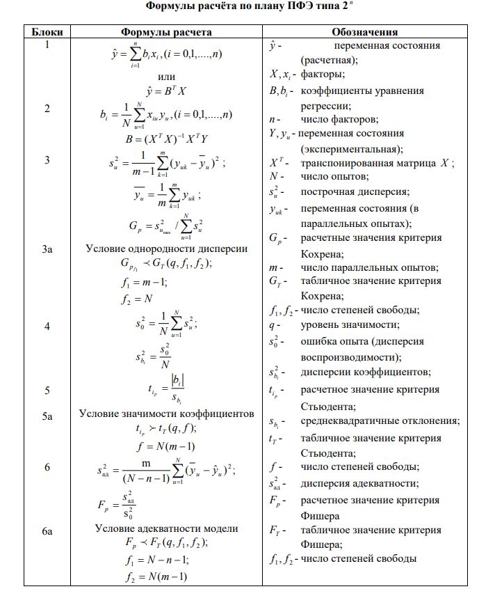
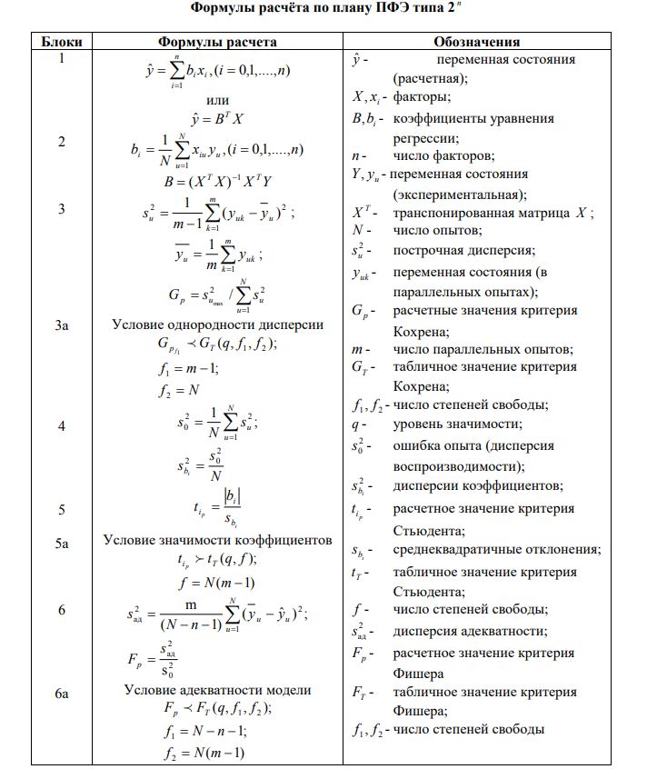

Лабораторная работа по теме: "Полный факторный эксперимент"
Введите кол-во факторов:
Обратная матрица ПФЭ
Введите количество Y: Введите точность исследований, по умолчанию - 3 знака после запятой.
Введите кол-во факторов:
Обратная матрица ПФЭ
Введите количество Y: Введите точность исследований, по умолчанию - 3 знака после запятой.
ИЛИ